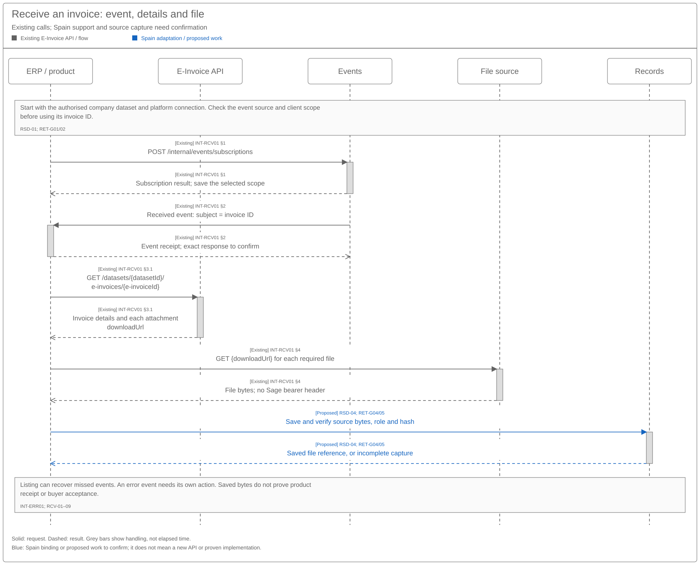
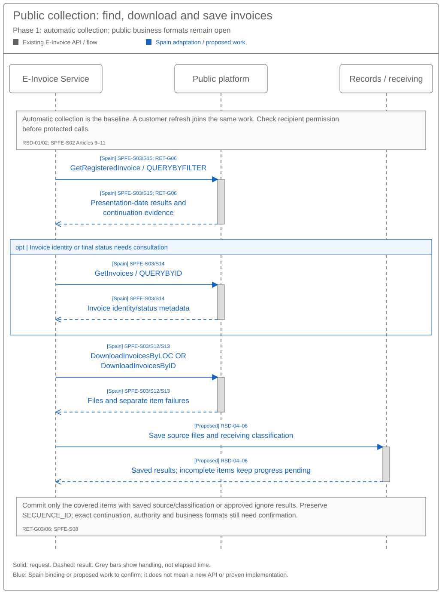
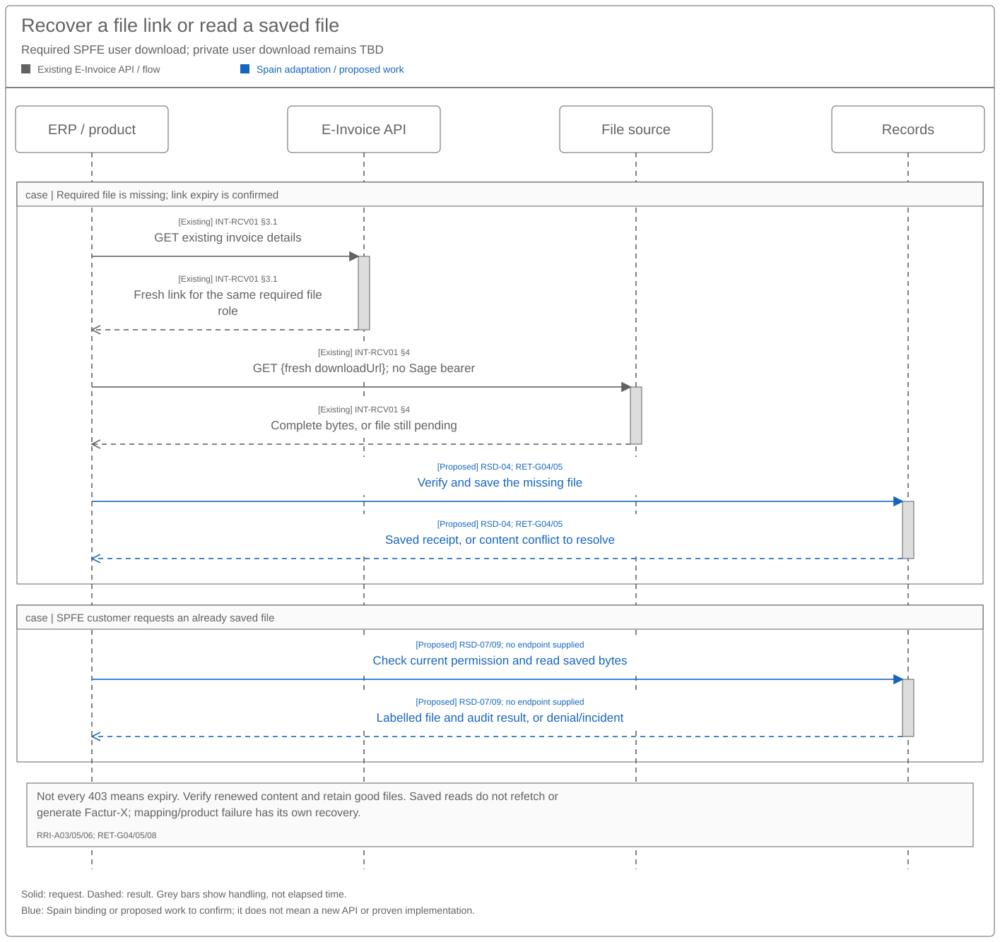

Invoice Retrieval Sequence and Reuse Assessment
Solution Summary · Logical Feature Specification · Feature landing page
Revision overview
This separate engineering view extends SPEC-SEI-016 with the supplied FR receiving guide, received 22 October 2026. It separates evidenced subscription, list, detail and file-download operations from Spain qualification and shared capture/recovery design. The predecessor remains unchanged, including its PRI/RSD/RCV interactions, data inventory, decisions and acceptance traceability.
Existing behaviour IDs retain their meanings. RET-G and RET-API-A identify engineering gaps and qualification checks, not new product requirements or APIs. Public/private release selection, wire contracts, records policy and actual build coverage remain open. All three companions are unpublished drafts; the selected Confluence source remains SPEC-SEI-016.
1 Engineering direction and product impact
Assess the existing FR receiving API as the preferred product-interface reuse candidate for the documented operations. Qualify the actual implementation and Spain country/provider binding before activation. SPEC-SEI-026 owns functional behaviour. INT-RCV01; REF-BASE/PRODUCT.
The guide starts with a connected dataset/address. It does not establish AEAT execution, complete recovery, source retention or business-idempotent product delivery. No breaking API change or new endpoint has been established.
| Scope | Existing capability / possible local work | Product integration impact and gate |
|---|---|---|
| Received notifications | Reuse subscription/event pattern where the selected access point supports it. Bind source, event type, account/dataset and environment. | Validate and retain the observation, then retrieve details/files. Error events need a defined action. Spain support and security remain RET-G01/02. |
| List and missed-event recovery | Reuse dataset listing, filters and returned pagination. Qualify inbound selection, date semantics, history and stable coverage. | A 90-day creation window cannot prove all-history or status-change completeness. Expose owned gaps rather than silently dropping old work. RET-G03. |
| Invoice details and attachment capture | Reuse detail GET and returned presigned file URLs. Integrate verified capture with the consuming records system. | Metadata/listing is not a file. Capture required roles promptly; do not retain/log capability URLs. RET-G04/05. |
| Spain public-platform MVP | Map qualified public discovery/download to the common source-capture and receiving handoff. | Public operations have different identity, authority, date and continuation contracts. Do not expose invented AEAT webhooks or forward FR filters unchanged. RET-G06. |
| Spain private platforms | Qualify each provider's full-file, notification/fetch or polling interface and required source representation. | A France/Sovos pattern is not evidence of Spain/B2B Router production support. Keep provider limits and historical reach separate. RET-G01/04/09. |
| Stored-file access and optional derived files | Qualify the records read under current authority; assess optional format=facturx separately. |
Saved-file download should not require new source collection or hybrid generation. No dedicated saved-record endpoint is supplied. RET-G05/08. |
| Inbound semantic mapping | Assess existing DTS first for the selected received representation and target schema. | Tax totals are not extracted response fields in this guide. Qualify UBL parsing, extensions and complete inbound mapping rather than inventing response fields. RET-G07. |
2 Proposed reuse sequences
Existing labels mean documented guide operations or supplied public transport. To qualify labels mean proposed handoffs or unresolved contracts. Lanes group responsibilities; they do not approve deployments. Solid arrows show requests; dashed arrows show paired responses. Webhook receipt responses remain unqualified.
2.1 FR notification, detail and file capture


The product registers the selected event scope. An authentic scoped notification supplies subject for detail retrieval. Download each required file, then verify durable capture before claiming file availability. The event can contain data.errorCode; use INT-ERR01's code actions and qualify correlation with the relevant history item. An error cannot be treated as success or automatically restart capture. List discovery is an alternative trigger under §3.1. INT-RCV01 §§1–4; PRI-02/03; RSD-04/05; RET-API-A01/02/04.
2.2 Spain public discovery and separate file recovery


Use GetRegisteredInvoice for presentation-date discovery and GetInvoices for identity/final-status consultation. Download source bytes separately through the qualified locator or identity operation. Commit only after covered items have durable source and classification or an approved ignore outcome. The final format document leaves query/download business formats pending; transport existence cannot close that gate. SPFE-S03/S08/S12–15; RSD-SPFE-R01–03; RET-API-A06.
2.3 Expired links, interrupted capture and stored-file access


For a guide-defined expired-link 403, retrieve details again for a fresh link. Preserve the invoice/file role and verify content binding; not every 403 proves expiry. Incomplete capture remains pending. Once capture is verified, later product failure does not require another external fetch. A customer's saved-file request checks current records authority and serves saved safe bytes; it is a separate logical operation with no evidenced physical endpoint here. INT-RCV01 §4; RRI-A03/05; RSD-04/07; RET-API-A04/05.
3 Existing operations and material contract gaps
These signatures come from a guide, not a pinned OpenAPI or live Spain verification. Preserve exact contract names and qualify source inconsistencies before generating a client.
| Operation / source locator | Guide or contract evidence | Reuse assessment / functional link |
|---|---|---|
POST /internal/events/subscriptions; INT-RCV01 §1 |
Code 201 labelled 201 OK; resource einvoice; selected source, e-invoicing.einvoice.received, scope and HTTPS audience/endpoint. |
Candidate PRI-02 discovery. Confirm public accessibility, casing/schema, caller permissions, safe key replay and subscription lifecycle. RET-G01/02. |
| Received webhook; INT-RCV01 §2 | subject is invoice ID; id, datasetid, accountid, subscriptionid, source, type, time; nullable data.errorCode. |
Candidate observation, not capture or product receipt. Verify authenticity and exact scope before using identifiers. Qualify delivery, order, replay and error meanings. RET-G02. |
GET /datasets/{datasetId}/e-invoices/{e-invoiceId}; §3.1 |
200 OK: invoice, status/history, attachment descriptors and downloadUrl. |
Candidate file-location and observation interface for PRI-03. Retain external identity separately from the local business invoice and capture receipt. RET-G01/04. |
GET /datasets/{datasetId}/e-invoices; §3.2 |
200 OK, filters, paginated data, links.next, meta.count, meta.hasMore; 20/page and 90-day creation window. |
Candidate notification fallback/PRI-04 recovery. Qualify ordering, inclusivity, inbound selection and coverage before advancing a local checkpoint. RET-G03. |
GET {downloadUrl}; §4 |
Short-lived presigned link, no Authorization; 200 OK bytes. Expired-link 403 is recovered by detail GET. |
Candidate source transfer, not retention or business-delivery evidence. Capture required bytes, metadata/hash/role and verify binding; no invented dedicated file URL. RET-G04/05. |
Detail GET with format=facturx; §3.1/§4 |
Generates or returns a Factur-X/ZUGFeRD 2.3 hybrid attachment, labelled Human_Readable. |
Optional derived-file capability. Ordinary polling and source capture omit it. Qualify generation effects, permissions, concurrency and Spain applicability independently. RET-G08. |
GetRegisteredInvoice / QUERYBYFILTER; SPFE-S03/S15 |
Date-of-presentation discovery; catalogue maximum 1000 results and continuation label SECUENCE_ID. PRE SOAP/MIME binding supplied. |
Public source candidate for RSD-03. Singular operation name is exact. Exact filters, pagination and generic WSDL payload differences remain gates. RET-G06. |
GetInvoices / QUERYBYID; SPFE-S03/S14 |
Identity/final-state consultation; catalogue maximum 1000 identifiers and issuer/recipient role. | Not general date discovery or file capture. Preserve identity and result meanings; qualify recipient representation. RET-G06. |
DownloadInvoicesByLOC / DOWNLOADBYLOC; SPFE-S03/S13 |
Locator download is recommended; certificate/NIU then representation branch in catalogue; PRE operation supplied. | Preferred public file-recovery candidate only after authority qualification. Do not derive a LOC batch limit or production address. RET-G06. |
DownloadInvoicesByID / DOWNLOADBYID; SPFE-S03/S12 |
One ApplicationResponse with document references; catalogue maximum 100 invoices and item-specific failures. |
Qualified alternative to LOC. Preserve each item outcome; ID limit cannot become a generic provider limit. RET-G06. |
3.1 Query coverage and recovery
| Evidence or missing contract | Required qualification and safe consequence |
|---|---|
FR list includes AP and AR codes; example is AR_Invoice |
Confirm received-document selection relative to the dataset, represented party and self-billing roles. Do not assume every listed record is inbound or that AP/AR names supply Spain rectification mapping. INT-RCV01 §3.2; RET-G01/03. |
createdAt window of 90 days |
Establish whether the limit concerns creation, selectable ranges or another supported condition. Prove boundary behaviour and a route for older/missed invoices. Do not convert it into retention or assume current-status filters recover every old change. RET-G03/05. |
links.next, 20/page, meta.hasMore |
Validate trusted same-API continuation, scope/filters, stable ordering, concurrent arrivals and crash resumption. Retain each covered item's durable outcome. The list example's links.self does not define the continuation encoding. RET-G03. |
currentStatus/createdAt example, absent from filter table |
Obtain the supported filter contract and whether it covers any history entry or only current state. The single-invoice history[] supports inspection; it does not prove list completeness. RET-G03. |
No fixed polling interval/limit; 429 uses Retry-After |
Honour valid provider wait instructions and qualify retry policy, fairness, backlog and missed-window monitoring. Set measured service targets with Product/Operations. Do not invent cadence or quotas. RET-G03/09. |
| Possible source read/ack effect | Qualify read destructiveness and source acknowledgement separately from webhook HTTP receipt. An acknowledgement ending source recoverability needs verified capture or a proven lossless boundary. Unknown possible mutations remain reconcile-first. RRI-A09; RSD-A16; RET-G02/06. |
3.2 Identity, files, formats and source conflicts
| Exact evidence | Spain assessment and consequence |
|---|---|
datasetId, accountid, datasetid, accessPointId, sender/recipient addresses |
Qualify business/dataset/channel cardinality, actual caller, partner ownership, environment and historical route. Do not infer a legal-entity or accountant grant from a dataset or fr.siren example. RET-G01; REF-TERMS. |
data.id versus field-table data.attributes.eInvoiceId |
Establish authoritative ID and event-subject linkage from the selected schema. erpInvoiceId is an optional ERP reference, not a universal identity or deduplication guarantee. RET-G01/02. |
Request Data/Type/Attributes/Scope versus lowercase table/response; opaqueToken/opaquetoken |
Resolve source casing and exact webhook security contract. Do not build a normative request by mixing examples. Subscription e-invoicing.einvoice.received and notification com.sage.network.e-invoicing.api.einvoice.received also need the Events Library mapping. RET-G02. |
attachments[].filetype: Undefined, UBL, Human_Readable, Original_Document |
Bind the actual exchanged source, structured representation and rendering separately. The guide says Factur-X input also yields UBL; that UBL can be derived. File role, name and MIME alone cannot prove original-byte provenance. RET-G04. |
Example MIME ubl-2.1/xml; public formats select UBL 2.5 InvoiceType, not CreditNote |
Qualify Spain input schema/profile/MIME and rectification code mapping independently. Preserve source bytes and required meaning; never relabel UBL 2.1 as 2.5. SPFE-S08 p. 8; RET-G04/07. |
Source CopyIndicator, identity and profile |
Use issuer NIF/series-number/issue-date evidence without inventing a serialization. Preserve public copy separately. Final Annex I BT-23 differs from example ProfileID; resolve SPFE-Q13 before activating the profile. SPFE-S02 Article 6/Annex I; SPFE-S09; RET-G06/07. |
currentStatus, history[].operationStatus, nullable errors |
Preserve exact source codes and IN_PROGRESS, COMPLETED, ERROR. Do not interpret New, transport success or processing completion as product consumption, buyer acceptance or accounting completion. Status catalogue/mappings remain missing. RET-G02. |
| VAT totals/tax breakdown absent from extracted response | Use the qualified structured file where the product needs them. Assess existing DTS inbound mapping, all required tax/extension fields, source/target hashes, versions, async completion and semantic-loss checks. Outbound generation does not establish inbound readiness. INT-RCV01 Polling; RCV-Q09; RET-G07. |
3.3 Shared access, file safety and records
Authenticate each caller and check current action authority for the represented business separately. Recheck it on refresh, file renewal and saved-file access. The guide's M2M option does not establish accountant client authority or Spain registered representation. Apply source binding and current client visibility without importing another client's progress. RSD-01/07; RCV-I13/16; RET-G01.
Treat returned presigned URLs as temporary access capabilities. Follow them only through a qualified destination/redirect policy, without forwarding the Sage bearer header. Keep them out of durable records, logs and events; retain the captured file reference/hash instead. Verify actual content, file role, size/type and integrity. Exact policies and limits need Security qualification. These are proposed Sage controls supporting RSD-04/07 and RCV-03, not extra claims from the guide. RET-G04/05.
For a confirmed expired-link 403, reacquire details for the same invoice and intended attachment. Confirm the fresh result still identifies the required source role before capture. The guide supplies no stable attachment ID, version/hash, range/resume or immutable-link guarantee. An interrupted transfer remains incomplete until verified; bounded recovery cannot silently accept changed bytes. A different failure is classified under its actual contract, not presumed expiry. INT-RCV01 §4; RET-G04.
Customer stored-file access, historical retention and restricted quarantine access require a qualified records contract. The guide's temporary links and generic archiving note do not establish that contract. A regular saved-file read must not refetch from the source, trigger format=facturx or emit buyer acceptance. A separate saved-read API may already exist; no method/path is supplied here. RRI-R06; RSD-07/09; RET-G05/08.
3.4 Private-platform download boundary
Private-platform file acquisition is included in PRI-03. The integration must qualify both the provider-to-Sage transfer and any product-facing file transfer; these can use different contracts. The supplied FR guide documents the latter through detail GET and GET {downloadUrl}. It does not establish an underlying B2B Router or Sovos Spain download endpoint. REF-BASE Part 2 §2.1; INT-RCV01 §§3.1/4; REF-PRIVATE.
| Private-source situation | Required transfer and evidence / existing control |
|---|---|
| Provider sends notification, metadata or a file reference | Obtain the required file through the selected provider's qualified download operation. Do not infer capture from a webhook, successful query or usable link. PRI-03; RRI-A02/03; RET-G04. |
| Provider delivers complete required file bytes | Capture and verify those bytes. Another provider download is needed only for a documented missing-file, integrity or recovery reason. RRI-A01; RSD-04. |
| Product obtains files through the documented FR interface | Retrieve details, then download each required file from its returned downloadUrl. This product-facing transfer does not prove how Sage obtained the file from the private platform. INT-RCV01 §§3.1/4; RET-API-A04. |
| User or product requests a previously captured private-source file | Apply the same authorised saved-file read as for a public-source file. Read saved bytes; handle missing/corrupt content as a separate records incident. RRI-R06; RRI-A05; RET-API-A05. |
Provider file roles, original-byte provenance, authority, link renewal, acknowledgement effects and historical availability remain RET-G01/04/05. PRD-SEI-216 FR30 and AC10 support private legal-document/attachment retrieval and original-document capture; they do not supply a complete provider download contract. REF-PRIVATE.
3.5 FR attempt errors and lifecycle separation
The later INT-ERR01 guide supplies 45 flow error codes. data.attributes.history[].operationStatus and history[].errorCode describe an attempt; currentStatus contains neither. The guide marks data.meta required. Correlate the relevant history item rather than assuming an array order or treating unchanged current status as success.
| Source evidence / exact codes | Receiving/retrieval consequence and safe action |
|---|---|
Status notification follows attempt handling; ERROR is final for that attempt |
Retain the terminal attempt. Platform retry language in some rows does not establish when or how another attempt starts; qualify linkage and retry owner under RET-G02/09. Notification failure is not evidence that the original file was never captured. |
ERR-RECEIVING-DOC-001 |
Source says notification delivery retry belongs to the platform; contact support if unchanged after six days. Observe/reconcile existing work. Do not repeat original invoice capture merely to generate a notification. |
ERR-RECEIVING-DOC-002 |
Source requests checking a valid idempotency key. The received-event path's key source and owner are not defined. Qualify them; do not invent an idempotency header for detail/file GET or a new invoice POST. |
ERR-RECEIVING-NOT-001, -007, -008 |
Signature/configuration, empty notification and address-type classification need correction or support as specified. Preserve denied/held scope; these are not generic retry-success cases. Other codes' exact actions remain in INT-ERR01. |
ERR-RECEIVING-NOT-003, -006, -009, -010, -016, -019 |
Source assigns retry to the platform for processing, upstream retrieval, invoice creation, attachment update, lifecycle-file retrieval and delivery respectively. Preserve item/transaction/file identities; do not repeat successful earlier stages. -016 is a lifecycle document download, not the original invoice download. |
ERR-RECEIVING-NOT-25 |
Source says confirm the existing transaction before retry. A duplicate transaction cannot by itself prove complete attachments, verified capture or product consumption. Resolve existing evidence first. |
ERR-RECEIVING-NOT-014 and -020; extraction workaround -011 |
Source labels the first two unused and describes extraction as a temporary workaround. Do not treat code presence, SVIX/SQS/DynamoDB names or planned extraction movement as proof of the Spain deployment or DTS coverage. RET-G07/09. |
| Code-specific six-day support wording | This is FR operational guidance for specified rows, not every receiving error, a retry limit or permission to delay safe capture/conservation. Selected-provider alerting and support commitments remain to qualify. |
Keep the complete code strings, including ERR-RECEIVING-NOT-22–-25 without extra zero padding. Unknown codes retain raw safe evidence and an owned action; they cannot default to success or safe retry. Guide descriptions are not a complete HTTP, webhook-response or reconciliation contract. RET-G02/04/09.
The separate AEAT Annex II SPFE-S22 supplies lifecycle message fields, not France error mappings or invoice-file download changes. Its reviewed eight codes, actors and key cardinalities align with final BOE Annex II. For example, PAYMENT needs payment and due dates, REJECTION needs its date and L1 reason 01/02, and for issuer DEFAULT, cbc:EffectiveDate means due date. SPEC-SEI-009 already owns that source mapping. A receiving/download error cannot create one of those business reports or their cancellations. Final SPFE-S02 remains legal authority; SPFE-Q16/17/19 remain open. See the original-source comparison.
4 Open engineering decisions
For each candidate, record the source capability/build, retained behaviour, Spain changes, gaps, build/run owner and qualification evidence. Design-pattern reuse is separate from existing implementation reuse.
| Gate / existing decisions | Evidence and activation consequence | Accountable roles |
|---|---|---|
| RET-G01 Identity and capability / RRI-Q01–03; RCV-Q02/12 | Pin business/dataset/address and partner/caller mappings, environment/access-point support, source role and current recipient/delegate authority. Missing country binding blocks the mode. | API, Identity, Routing, Product, Spain Compliance, provider owner. |
| RET-G02 Events and contract conflicts / RCV-Q01/05 | Pin OpenAPI, event/status/error libraries, casing, auth/audience, subscription key behaviour and lifecycle, webhook responses, errors, ordering/replay and source read/ack effects. No success-only or destructive receipt assumption. | API, Events, Security, Integration, Operations. |
| RET-G03 Complete collection / RRI-Q01/02; RSD-G01/06/07 | Prove inbound filters, time semantics, 90-day boundary/older recovery, pagination consistency, stable progress and late changes. Missing coverage remains a visible gap; it cannot release a completeness claim. | API, Retrieval, Architecture, Product, Operations. |
| RET-G04 Exact file recovery / RRI-Q01; RCV-Q01/03 | Prove stable attachment/source-role binding, original provenance, renewable links, expiry/error classification, partial transfer and safety controls. Missing bytes remain pending. | API, Provider/Integration, Records, Security. |
| RET-G05 Records and saved-file access / RSD-G03/04; RCV-Q06 | Pin existing records build/API, integrity, current permissions, role/country retention, safe quarantine access, holds/restore/export and historical coverage. No retention duration or all-history API claim is supplied. | Records, API, Product, Compliance, Security, Operations. |
| RET-G06 Spain public contract / RSD-G01/02/05; SPFE-Q06/Q09/Q12–14/Q17 | Resolve presentation-date filter/MessageProperties, SECUENCE_ID, ordering, locator/ID/NIU encoding, recipient authority, read effects and pending business formats. Qualify PRE contract before activation; do not infer live production support. |
Spain public-platform technical owner, connector/API, Identity, Compliance. |
| RET-G07 Inbound reuse / RCV-Q03/04/07/09; RSD-G08 | Qualify existing DTS build, input/output mapping, Spain UBL/profile/rectification/copy rules, required tax/extension coverage, rule isolation, async results and operational support. Missing direction/profile evidence blocks mapping. | DTS, Format/Validation, Receiving, target Product, Architecture. |
| RET-G08 Optional derived representation / RRI-Q02; RCV-Q06 | Decide Spain need for format=facturx; qualify generation effects, access, concurrency and provenance. Keep absent from ordinary capture/read flows until qualified. |
Product, API, Records, Format, Security. |
| RET-G09 Delivery and operations / RCV-Q08/11/13; RRI-Q03 | Prove capture/classification/product receipt, per-client recovery, builds, limits, monitoring, ownership and existing-country regression. No numeric SLA or bulk API is established. | Receiving, Product, Architecture, Integration, Operations. |
The logical recovery table defines outcomes, safe next actions and resume evidence. Qualify source error meanings before mapping failures to those actions. In particular, prove missing-versus-not-ready file handling, non-expiry access refusals, required/optional file sets and partial-transfer recovery under RET-G02/04. Prove retry exhaustion, owned escalation and evidence-backed closure under RET-G03/09. The supplied guide does not establish those contracts or numeric limits.
INT-ERR01 narrows the error-field and code-action gaps; it does not close retry/attempt correlation, event authentication, provider recovery or selected-build qualification. Record platform retry ownership and the applicable code-specific support policy under RET-G02/09. The six-day wording is a source recommendation, not an approved Spain operational target.
5 API qualification checks
These are evidence to obtain, not tests already run. Functional acceptance retains existing IDs in SPEC-SEI-026.
For RET-API-A02/04/09, exercise INT-ERR01 notification failure after possible capture, attachment-update failure after invoice creation, duplicate transaction ERR-RECEIVING-NOT-25, invalid webhook verification and a final ERROR followed by a separately identifiable platform retry. Confirm no fresh consumer invoice/key, no repeated good files and no assumed history ordering. For RET-API-A01/07, prove FR errors cannot become an Annex II buyer decision, payment report or cancellation; retain the lifecycle actor/field gate. These are qualification cases, not executed tests.
| Check / functional link | Required API and implementation evidence |
|---|---|
| RET-API-A01 / RSD-A01/08/13; RRI-A07/08 | Prove entity/dataset/account/environment scoping, current delegated rights and revocation on source calls, renewal and saved reads. France identities and Spain representation cannot leak across country rules. INT-RCV01; SPFE-S02 Article 11. |
| RET-API-A02 / RRI-A02/04/09; RCV-A20 | Exercise authenticated and invalid webhook scope/audience/token, success/error, duplicate/reordered/missed event and lost subscription response. Prove subject-to-resource linkage and exact receipt meaning without destructive acknowledgement before a lossless boundary. INT-RCV01 §§1–2; RET-G02. |
| RET-API-A03 / RSD-A03/07/10; RRI-A04 | Exercise over 20 items, inbound/outbound mix, concurrent arrivals, repeated page, crash, date boundaries and an invoice/change older than 90 days. Qualify currentStatus/createdAt before use. Unavailable history retains an owned gap and cannot produce false freshness. INT-RCV01 §3.2; RET-G03. |
| RET-API-A04 / RRI-A01–03/06; RSD-A06/09/14 | For a qualified private source, notification-only arrival requires file download; complete-file delivery avoids redundant provider download. Exercise not-ready/missing files, expiry versus other access refusal, renewed content binding and interrupted/partial required file sets. Retain completed files and recover only affected transfers; missing required files block dependent completion. Prove no bearer forwarding, persisted URL, ordinary unsafe access or verified receipt for partial/wrong bytes. INT-RCV01 §§3.1/4; REF-PRIVATE; RET-G02/04. |
| RET-API-A05 / RSD-A04/11; RRI-A05/08; RCV-A23/24 | For captured public and private files, mapping/product failure does not block a currently authorised safe stored read. Revoke access, impose a hold and switch provider. No external refetch, silent disposal or new business invoice follows. Apply SPFE-S02 Articles 9–11 only to the public scope; qualify private records rules under RET-G05. |
| RET-API-A06 / RSD-SPFE-A01–03; RSD-A16 | Prove presentation-date discovery, exact continuation, identity consultation and separate LOC/ID download including partial failure and missing recipient authority. Reconcile possible read effects; query metadata cannot complete capture. SPFE-S03/S08/S12–15; RET-G06. |
| RET-API-A07 / RSD-A05/15; RCV-A13/16–18/22; RRI-A10 | Qualify actual DTS inbound build/mapping and public-copy equivalence with distinct bytes, tax precision, rectification and extensions. Wrong-source async output is refused. Regress France and selected Spain provider rules independently. SPFE-S02/S08/S09; RET-G07. |
| RET-API-A08 / RRI-A06/07; RCV-I05 | Ordinary reads do not generate a hybrid. If format=facturx is enabled, prove original preservation, correct derived role, concurrent/repeated request behaviour and access control. Generation failure retains a separate pending/failed result without blocking independently permitted source access. A generated PDF cannot satisfy missing structured-source capture. INT-RCV01 §§3.1/4; RET-G08. |
| RET-API-A09 / RCV-A14/15/28/31; RSD-A02 | Prove capture/classification progress survives crash and lost product receipt without duplicate invoice effects. Honour Retry-After on 429; exercise the qualified retry limit, stop automatic repetition when exhausted, and retain an owned unresolved case until evidence supports closure. Demonstrate fair per-client work/visibility, measured targets and named run owners. INT-RCV01 Polling; RET-G03/09. |
REF Source references
| REF ID | Original source and version/date | Exact location | Supported claim and limit |
|---|---|---|---|
| REF-BASE | SPEC-SEI-016, updated 20 October 2026 | Parts 2–4; PRI/RSD/RCV contracts, data and gates | Proposed shared controls and inherited IDs; not a deployed physical API. |
| REF-PRODUCT | PRD-SEI-211, updated 20 October 2026; PRD-SEI-223, updated 7 October 2026; PRD-SEI-227 | PRD211 FR1–55/Phase 1; PRD223 receiving FR17–20 and DTS FR43–44; shared-country direction | Canonical product sources with their recorded status; no API compatibility or runtime guarantee. |
| REF-PRIVATE | PRD-SEI-216 B2B Router integration, repository baseline reviewed 22 October 2026 | FR26–30, AC10 and evidence E3/E5/E6 limits | Private received-invoice discovery, legal-document/attachment retrieval and original capture requirements. Provider endpoint, file-delivery mode and Spain contract fitness remain unqualified; this is not a fresh verification of the provider's live API. |
| INT-RCV01 | Selective extract of supplied FR receiving guide, received 22 October 2026, revision unknown | §1 subscription; §2 event; §3.1 detail; §3.2 list/filter; §4 file download; Polling | Guide facts and conflicts. Original attachment hash recorded in extract. OpenAPI, original page URL, full event/status/error contracts and build were not supplied. No Spain support established. |
| INT-ERR01 | FR error-handling extract, received 22 October 2026, revision/build unknown | Processing and error fields; ERR-RECEIVING-DOC, ERR-RECEIVING-NOT, Recovery interpretation |
Concrete history-only outcomes, 45 exact source codes and code-specific platform retry/support actions. Does not establish retry mechanics, runtime topology or Spain support. |
| SPFE-S22 | Separate Annex II, filename date 21 October 2026, supplied 22 October; no verified release version | §§1–4 pp. 4–14; L1 p. 15 | Eight lifecycle message types, actor roles and field cardinalities. Final BOE Annex II remains legal baseline; no retrieval endpoint/error dictionary or proven supersession. |
| SPFE-S02 | BOE-A-2026-20587.pdf, final Order HAC/1028/2026, published 5 October 2026 | Article 6; Articles 9–11, PDF pp. 8–11; Annex I BT-23/24 | Public invoice identity, recovery/conservation and third-party representation; final profile baseline. Not the missing wire filter or provider API contract. |
| SPFE-S03 | CatalogoServicios.pdf, 0.1.0, 9 October 2026 | §§6.4–6.7, pp. 12–15 | QUERYBYID/QUERYBYFILTER, presentation date, SECUENCE_ID, ID limits, LOC preference and authority branches. Exact encoding/ordering/recipient-authority reconciliation remain open. |
| SPFE-S08 | FormatosEntradaSalida.pdf, 0.1.0, 9 October 2026, BORRADOR | §5.1.1 p. 8; §§5.4–5.7 pp. 14–15 | UBL 2.5 business documents; query/download business formats marked pending. Transport inventory does not complete them. |
| SPFE-S09 | factura.xml, supplied 13 October 2026 | cbc:ProfileID, cbc:CustomizationID, cbc:CopyIndicator |
Exact example values and conflict with final Annex I BT-23. Not a complete faithful-copy or activated profile contract. |
| SPFE-S12 | DownloadInvoicesByID.wsdl, supplied 13 October 2026 | DownloadInvoicesByID portType/binding, MIME parts and service ports |
Exact operation/PRE transport. Does not close pending business formats or prove live acceptance. |
| SPFE-S13 | DownloadInvoicesByLOC.wsdl, supplied 13 October 2026 | DownloadInvoicesByLOC portType/binding, MIME parts and service ports |
Locator-download PRE transport; no inferred production address, LOC batch size or recipient authority. |
| SPFE-S14 | GetInvoices.wsdl, supplied 13 October 2026 | GetInvoices operation/binding/service ports |
Identity-query PRE transport; generic payload description is not a complete business schema. |
| SPFE-S15 | GetRegisteredInvoice.wsdl, supplied 13 October 2026 | Singular GetRegisteredInvoice operation; generic payload documentation and service ports |
Exact transport/name. Reconcile catalogue MessageProperties filters with WSDL payload description before client design. |
| REF-TERMS | Shared glossary; onboarding reuse assessment | Dataset/account/address terms; onboarding GAP-01 | Identity terminology and existing qualification route; no assumption of one proven dataset per legal entity or new authority. |
| REF-EVIDENCE | RES-SEI-002; source manifest | Original-file inventory/hashes; SPFE-Q06/Q09/Q12–14/Q17 | Reading aid and unresolved source gates. Inventory or extract completeness does not prove mappings or implementation readiness. |